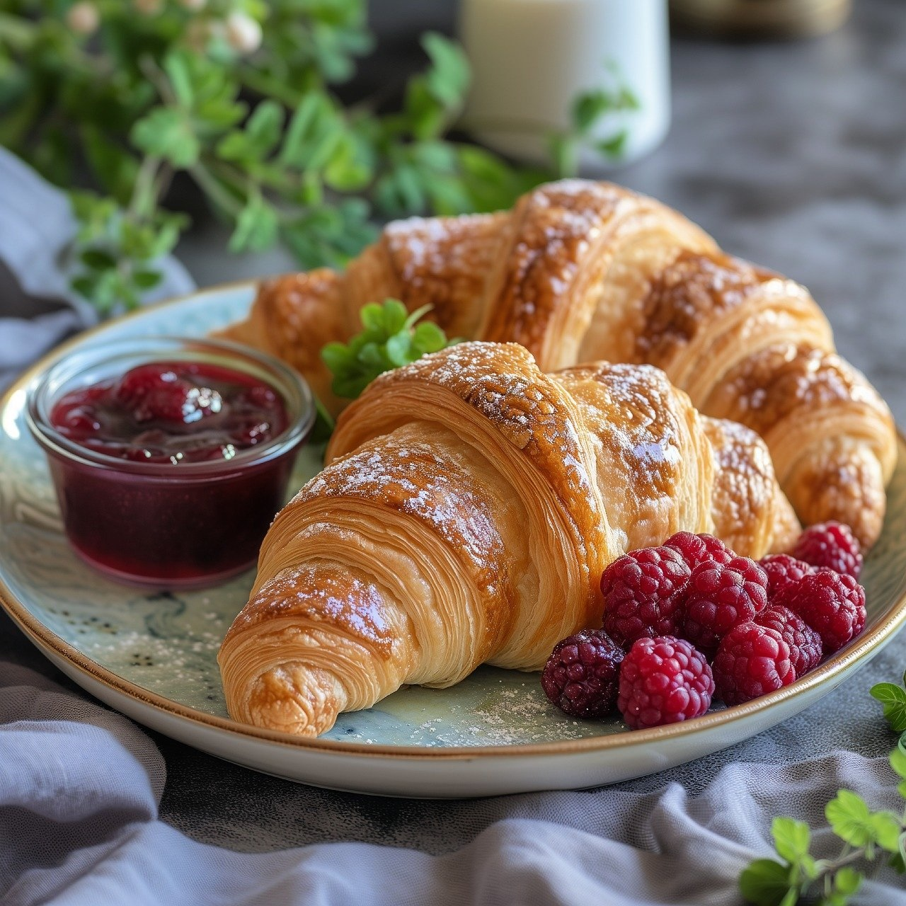
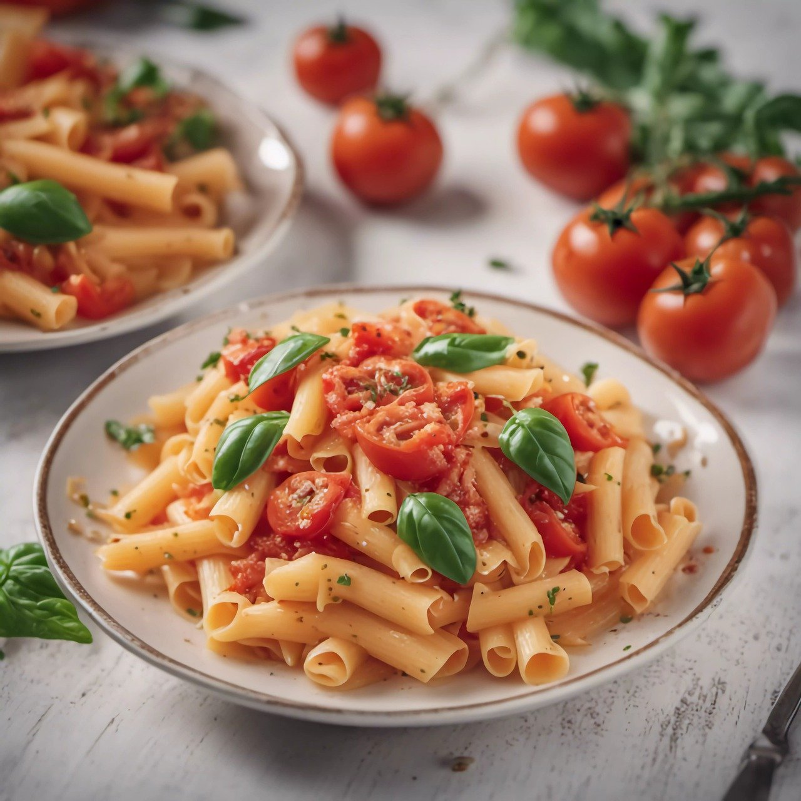
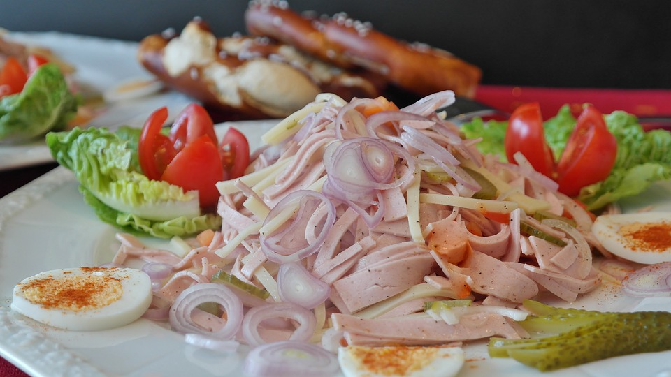

Französische Croissant
Schmackhafte Croissants können auch zu Hause sehr einfach gebacken werden. Mit ca. 30 Minuten Aufwand kannst du ein wundervolles Frühstück zaubern.
Lust auf was Neues?

Nudeln mit Hirtenkäse

Wurstsalat
Ente mit süß-saurer Sauce
Pfanne vs Wok - Was ist besser?
Pfanne und Wok haben unterschiedliche Stärken. Die Pfanne ist vielseitig und eignet sich gut für Braten und Frittieren. Der Wok hingegen ist ideal für schnelles Anbraten bei hoher Hitze und eignet sich besonders gut für asiatische Gerichte und Gemüse. Welche du besser findest, hängt davon ab, welche Art von Gerichten du bevorzugst und wie du kochst.